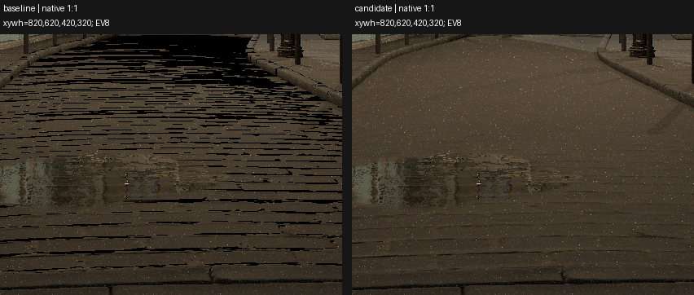
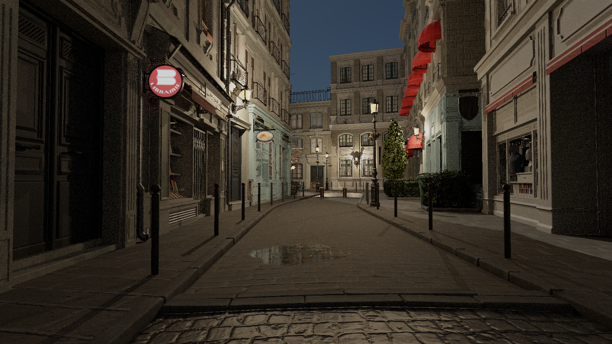
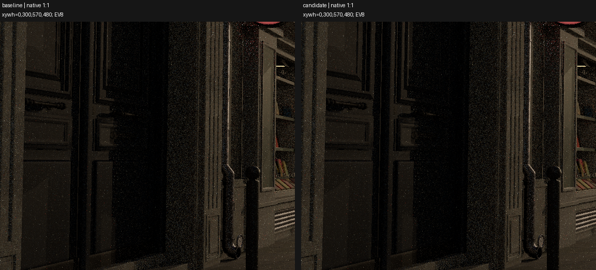
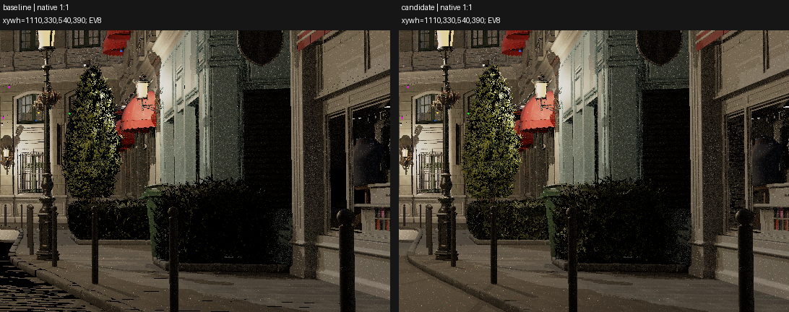
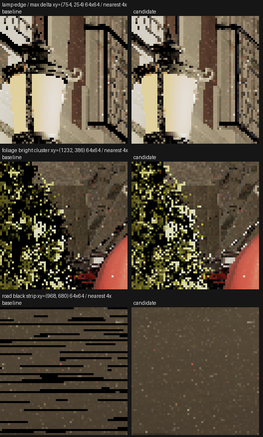
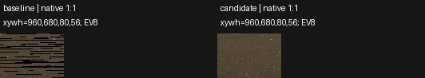
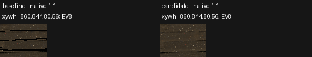
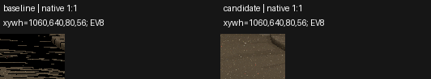

同相机、光照、种子和EV8的原始HDR对照显示，路面密集黑条明显消除。中远处铺地凹凸感同时变弱，水洼内部黑碎纹与颗粒仍在。灯罩边缘的原黑缺口恢复成连续亮边；部分叶片沿叶形增亮，未见该局部轮廓外光晕，但亮碎片增多。整体细噪、门洞暗部和动态稳定性未解决。据此保留为可切换室外预设，仅认可该静态首帧的道路修复净收益。
同EV8与wide-C1/sRGB，图像直接来自原始线性HDR，未去噪。道路裁切中精确黑色像素由24,149降到7；这是辅助观测，选用结论同时依据实图。未把此帧当成动态或整体画质通过。
结论与真实耗时 · 九点/区域HDR对照 · GPU法线读回 · 独立实图观察 · 当前原尺寸图


店面暗部仍暗；植物轮廓未见明显破坏，局部叶片高光增多。没有声称材质外观完全不变。


灯罩边缘缺口和叶片轮廓增亮；单帧不能证明高光强度准确或动态稳定。



